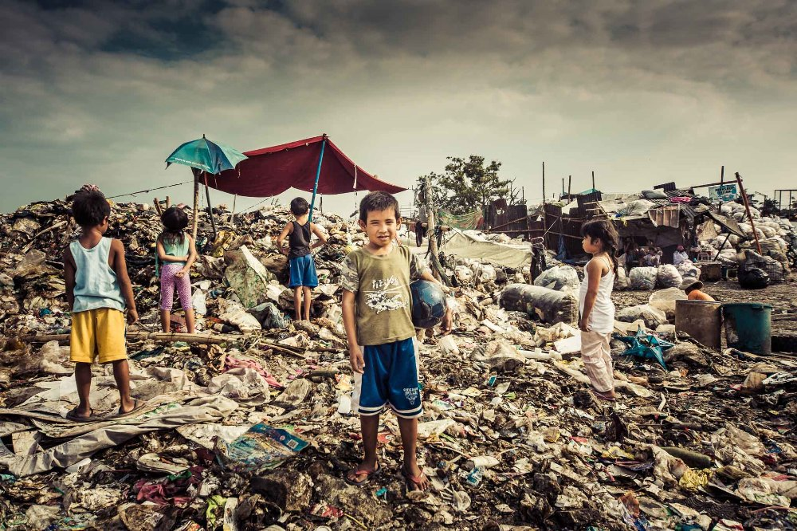

What is poverty?
Poverty is defined as a lack of funds to meet basic needs such as food, clothing, and shelter. Poverty, on the other hand, is much more than simply not having enough money. Poverty is defined as being unable to participate in recreational activities, sending children on a day trip with their classmates or to a birthday party, and not being able to pay for medications for an illness. These are the costs of poverty. People who can barely pay for food and shelter simply cannot consider these additional costs. There are negative consequences for society when people are excluded from the community, are not well educated, and have a higher incidence of illness.
Poverty is a personal concern as well as a broader social issue. Individual or household inability to make ends meet can result in a variety of physical and mental problems. At the societal level, high poverty rates can stifle economic growth and be associated with issues such as crime, unemployment, urban decay, a lack of education, and poor health. As a result, governments frequently enact social welfare programs to assist in lifting families out of poverty. Some countries' welfare states (social safety nets) are stronger than others. The United States, for example, is much more individualistic and rejects welfare programs. In comparison, European countries provide a much broader range of welfare programs and assistance to the poor.